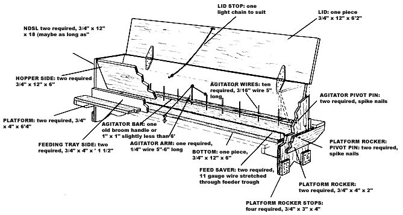
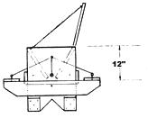
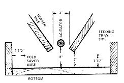

You can feed baby chicks out of flat troughs but, once they're six to eight weeks old, you'll need an automatic feeder for them. One that holds about 100 pounds of mash is about right and as promised last issue here's the detail on a simple, sturdy self-feeder that Dad designed years ago. One just like this handled many hundreds of chickens over a years-long period back on the farm in Indiana.
Almost any homestead should already have most of the necessary materials kicking around the workshop or back shed. A couple of 5" hinges, short length of light chain, an old broomstick, some wire, a few nails and a small selection of 3/4" x 12" lumber are the major ingredients. The cutaway above shows you how they all go together.
The idea is, of course that the chickens jump on the platform to get the feed and by so doing (since the platform is supported so that it will rock up and down on either side), continually work more feed down to where they can get at it. If the mash was TOO easy for them to pick out of the feeding tray, however, they would waste it... so a feed saver wire is run down both sides of the eating trough. Stretched about 1 1/2" inside the trough's side and about the same distance above the bottom of the tray, these wires make eating just difficult enough to prevent a flock from pulling excess mash out of the feeder. The other critical dimensions of the feeder's "shake down" mechanism are shown at right. Position the PLATFORM ROCKER STOPS so that the PLATFORM can only rock up and down about one inch on each side.-JS.
|
 |
 |
 |